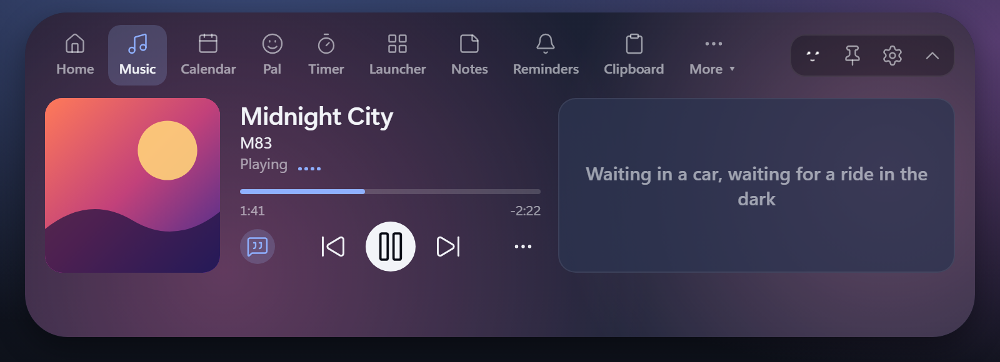
Music with synced lyrics
Album art, seek bar, play and skip for whatever is playing, and the current lyric line large and animated.
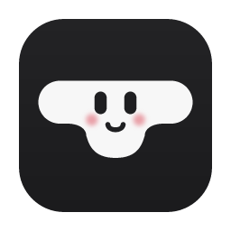
Dynamic Notch GitHubA small pill at the top of your screen that opens into a dashboard: music, calendar, weather, notes and voice dictation. And Pal, who tells you when your coding agents need you.
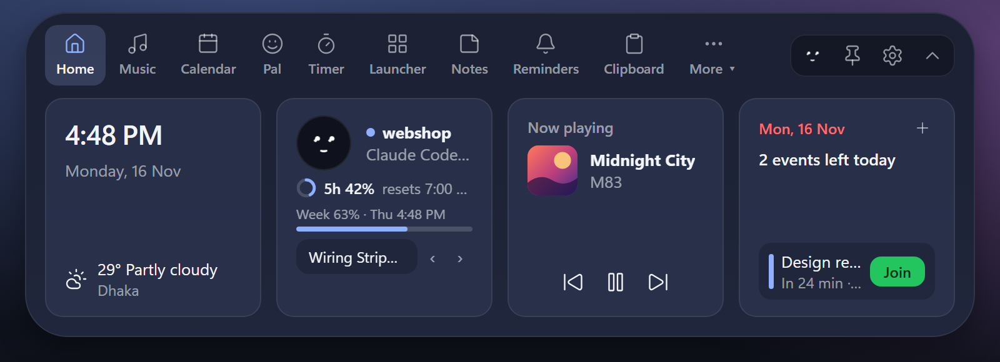
Hover the pill and it opens. Move away and it goes back to a clock.

Album art, seek bar, play and skip for whatever is playing, and the current lyric line large and animated.
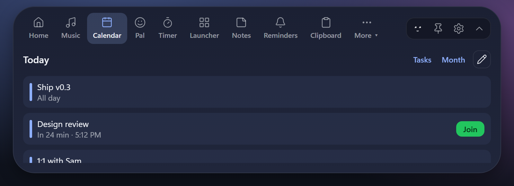
Read the Windows Calendar app and/or an iCal link. Join online meetings in one click.
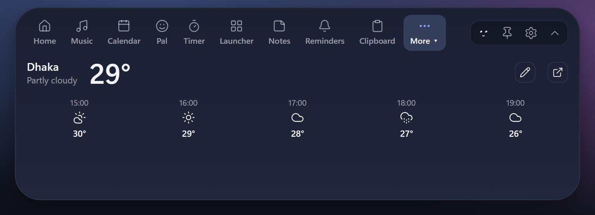
Now and the next hours for your city, with no account.
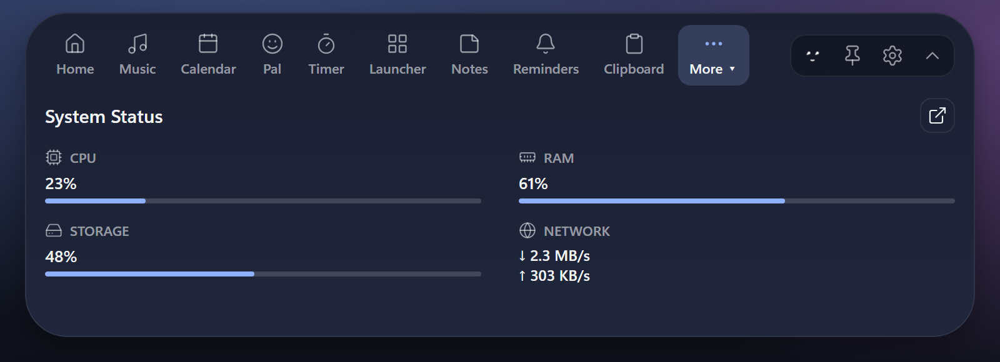
CPU, RAM, storage and network. Bars turn amber, then red, when something runs hot.
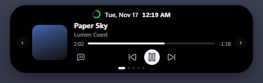
Prefer something smaller? One card at a time: music with lyrics, Pomodoro, shelf and clipboard, to-dos and widgets. Flip with the arrows, the wheel or ← →.
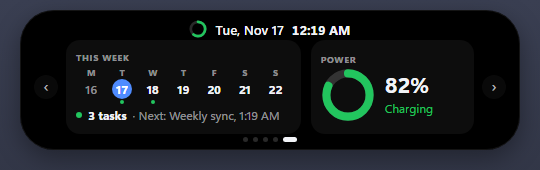
The week at a glance with a dot on busy days, what's next, and your battery. A short toast pops up when earbuds connect or the charger goes in.
Connect Claude Code, Codex, Gemini CLI, Cursor and Copilot CLI in one click. Every session shows its status on the island, and when an agent asks for permission you can answer there instead of switching back to a terminal.
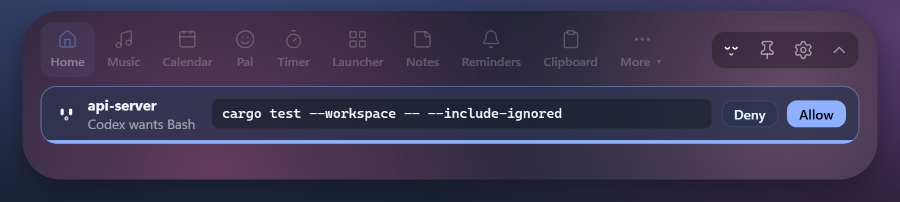
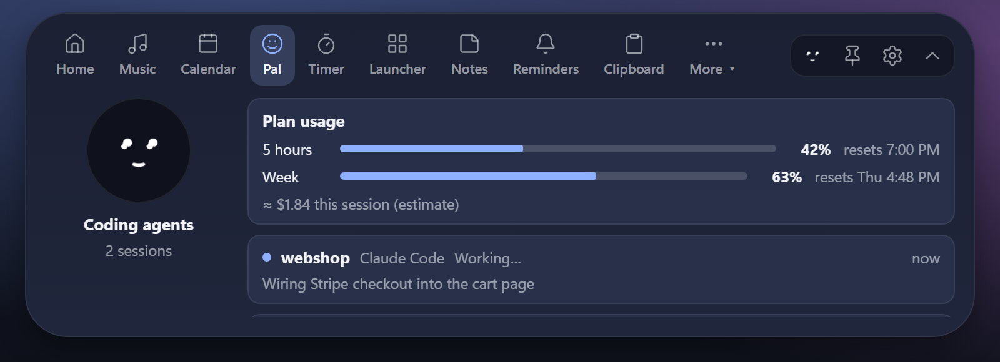
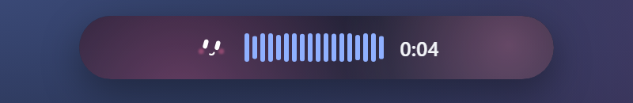
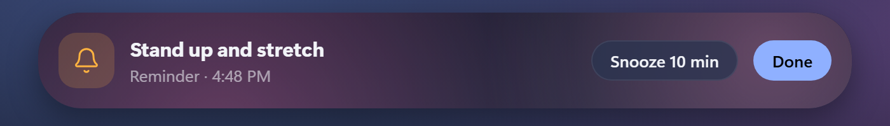
Hold the dictation hotkey in any app, talk, let go, and the text is pasted. Transcription runs offline on your PC, with a choice of models including 1600+ languages (Bangla included), or through OpenAI or Groq if you prefer.
A small Rust app that draws with the WebView2 already in Windows. It hides when you go fullscreen and frees what it isn't using.
| Name | CPU | Memory |
|---|---|---|
| Dynamic Notch Island | ||
| Idle | 0.1% | 28 MB |
| Dashboard open | 0.1% | 28 MB |
| Dictating | 0.1% | 1,051 MB |
| Transcribing (2 s) | 10% | 1,177 MB |
Settings, notes and history live in a local database. The app only talks to services you set up: weather, lyrics, your calendar link, your dictation provider.
Only the pill takes the mouse. Click anywhere around it and you reach the window or desktop underneath.
Apache-2.0, on GitHub. Read the code, file an issue, send a pull request.
Seven themes, your own accent colour, a floating pill or a notch joined to the top edge, and cards you can reorder, hide or resize. Tabs and Home cards are yours to arrange.
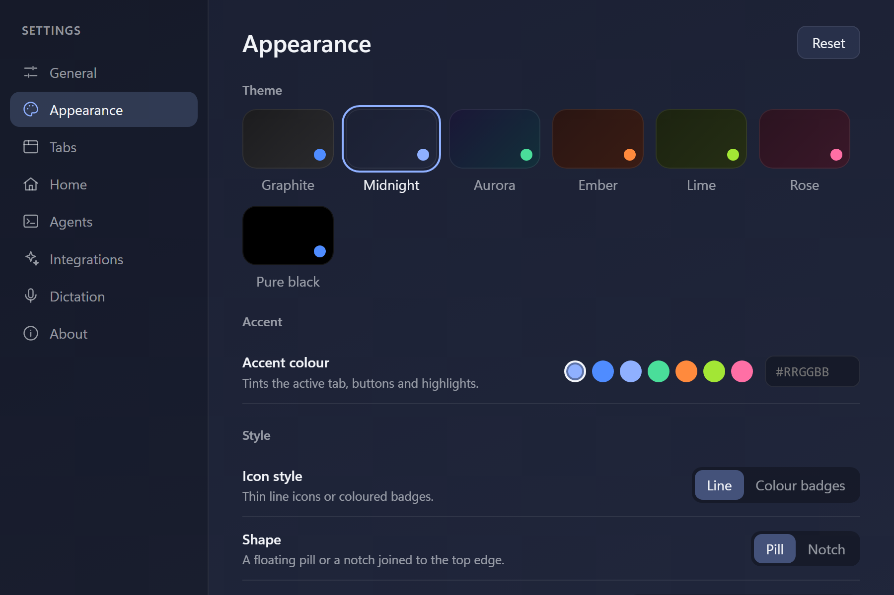
Version 0.1. Free, no account.
The installer isn't code-signed yet, so SmartScreen shows "Unknown publisher" for new apps. It's expected. Click More info, then Run anyway.
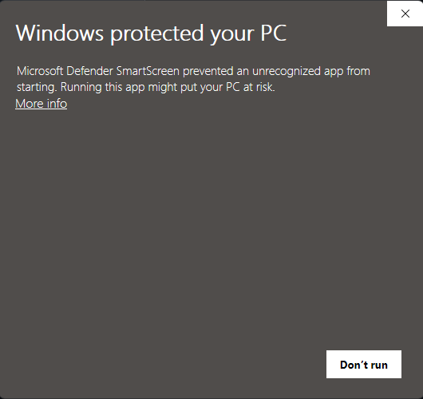
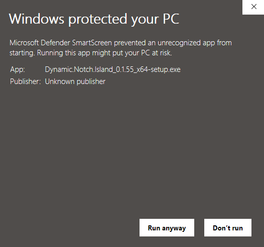
Linux note: the Linux build compiles and passes tests but hasn't been tried on much real hardware. Media controls, notifications and fullscreen detection aren't there yet. Run it from a terminal the first time.
Yes. It's open source under the Apache License 2.0.
No accounts and no telemetry. It contacts only services you set up: Open-Meteo for weather, LRCLIB for lyrics (artist and title only), your calendar link, and your chosen dictation provider if you use cloud dictation. Offline dictation downloads its model once from Hugging Face.
No. Nothing is allowed unless you click Allow. If you don't answer within 15 seconds, or the island isn't running, the agent just asks in its own terminal as usual.
It adds hook entries to that agent's config file after you confirm, and backs the file up first (.dynamicnotch.bak). Disconnect removes only what was added.
Claude Code, Codex, Gemini CLI, Cursor and Copilot CLI. Allow and deny from the island works for Claude Code, Codex and Copilot CLI.
Not yet.
Open an issue on GitHub.